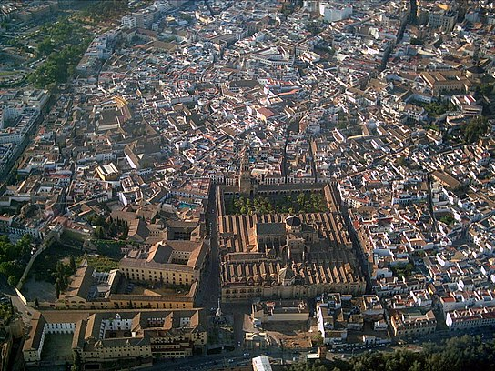

Casco Historico
La mezquita-catedral de Córdoba,12 Santa María Madre de Dios» o «Gran mezquita de Córdoba», actualmente conocida como la Catedral de la Asunción de Nuestra Señora de forma eclesiástica, es un edificio de la ciudad de Córdoba, España. En 2019 superó los dos millones de visitantes, siendo su récord histórico y convirtiéndolo en uno de los monumentos más visitados de España.3
Se empezó a construir como mezquita en el año 784; hasta hace poco se creía que tras la apropiación por los conquistadores musulmanes de la basílica hispanorromana de San Vicente Mártir4 y la reutilización de parte de los materiales, quedando reservada al culto musulmán, pero los estudios arqueológicos más recientes descartan esta hipótesis.5 El edificio fue objeto de ampliaciones durante el Emirato de Córdoba y el Califato de Córdoba. Con 23 400 metros cuadrados, fue la segunda mezquita más grande del mundo en superficie, por detrás de la Mezquita de La Meca, siendo superada posteriormente por la Mezquita Azul (Estambul, 1588). El muro de la qibla no fue orientado hacia La Meca, sino 51º grados hacia el sur; esto era habitual en las mezquitas de al-Ándalus.
En 1238, tras la Reconquista cristiana de la ciudad, se llevó a cabo su consagración como catedral de la diócesis con la Ordenación episcopal de su primer obispo, Lope de Fitero.6 El edificio alberga el cabildo catedralicio de la Diócesis de Córdoba, y por su carácter de templo católico y sede episcopal, está reservado al culto católico. En 1523, bajo la dirección de los arquitectos Hernán Ruiz, el Viejo y su hijo, se construyó su basílica cruciforme renacentista de estilo plateresco.
Hoy todo el conjunto constituye el monumento más importante de Córdoba, y también de toda la arquitectura andalusí, junto con la Alhambra, así como el más emblemático del arte omeya hispanomusulmán. Declarada como Bien de interés cultural2 y Patrimonio Cultural de la Humanidad como parte del centro histórico de la ciudad,7 se incluyó por el público entre los 12 Tesoros de España en 20078 y fue premiada como el mejor sitio de interés turístico de Europa y sexto del mundo según un concurso de TripAdvisor.9
Según la tradición, en el solar de la actual Mezquita-catedral de Córdoba estuvo originalmente una iglesia cristiana dedicada a San Vicente Mártir,10 que fue dividida y compartida entre cristianos y musulmanes tras la conquista islámica de la península ibérica.11 Con el aumento de la población islámica, el emir Abderramán I decidió en 785 comprar la estructura al completo y demolerla12 para construir la nueva mezquita;13 a cambio, permitió a los cristianos reconstruir otras iglesias en ruinas, incluidas las de los mártires San Fausto, Januario y Marcial, que gozaban de gran devoción en la época.14
La puerta de San Esteban, la más antigua del edificio, fue construida como puerta occidental de la primera mezquita. La mezquita fundacional fue construida por Abderramán I, uno de los últimos miembros de la dinastía omeya que había conseguido escapar de Damasco tras la masacre de su familia durante la Revolución abasí y había derrotado al gobernador abasí Yusuf ibn Abd al-Rahman al-Fihri en Córdoba, instaurando el nuevo Emirato independiente en el 756.26
El mihrab original de la mezquita (nicho que indica la dirección del rezo) no se conserva actualmente, aunque es probable que sus restos fuesen encontrados en las excavaciones entre 1932 y 1936. El artefacto hallado mostraba la parte superior del mihrab con forma de concha, similar al posterior.24 La mezquita fundacional tenía cuatro entradas: una estaba en el centro del muro norte en el patio, dos en los muros oriental y occidental del patio y el cuarto se hallaba en medio del muro occidental dentro de la sala de oración. Esta última fue conocida como Bab al-Wuzara' (la puerta de los Visires, hoy conocida como puerta de San Esteban) y es probable que fuera la entrada usada por el emir y los oficiales estatales, que trabajaban en el Alcázar andalusí contiguo. Los muros exteriores se reforzaron con contrafuertes que pueden verse a día de hoy
Esquina suroeste, exterior del muro de la quibla.Los muros de qibla de las mezquitas teóricamente deben estar orientados hacia La Meca, sin embargo, la Mezquita de Córdoba está orientada hacia al sur, mientras que La Meca se encuentra al sureste.3031 Esta orientación, a diferencia de las mezquitas actuales, se debe a las diferencias históricas de opinión sobre la dirección apropiada del muro de qibla en lugares islámicos más lejanos como al-Ándalus y Marruecos. En este periodo temprano, muchos musulmanes de la región preferían que la qibla estuviera mirando hacia el sur en lugar de mirar directamente hacia La Meca.32 Este hecho se basa en que el profeta Mahoma declaró que «entre el este y el oeste se encuentra la qibla», lo que legitimó las alineaciones hacia el sur.3334 Esta práctica también emulaba la orientación de los muros de la Kaaba de la Gran Mezquita de La Meca, basada en otra tradición que consideraba que los muros de la Kaaba se asociaban con las diversas localizaciones del mundo islámico. Según esta tradición, la cara norte de la Kaaba se asociaba a al-Ándalus y, por lo tanto, la Gran Mezquita de Córdoba se orientaba al sur como si mirara a la cara norte de la Kaaba.3031 A pesar de que mezquitas posteriores en al-Ándalus estuvieron orientadas hacia La Meca, por ejemplo, la mezquita de Medina Azahara del siglo x, las expansiones posteriores de la mezquita cordobesa no modificaron su orientación original.35 Otra teoría propuesta por el arqueólogo Pedro Marfil apunta a que las estructuras originales se adaptaron a los límites urbanísticos de la ciudad tardoantigua.36
En el siglo xx, el escritor Ignacio Olagüe Videla en su célebre y controvertido libro La Revolución islámica en Occidente (1974), supone que Abderramán I no habría construido esta mezquita y que el templo primitivo ya contaba con el famoso bosque de columnas. Añade, además, que originalmente habría sido concebido para el culto arriano. Sin embargo esta postura, recogida en textos de divulgación,37 es rechazada por la investigación académica por carecer de pruebas y manipular los textos.38 Los estudios arqueológicos realizados en el lugar por el arquitecto Félix Hernández demuestran sin lugar a dudas el origen omeya del edificio, erigido sobre la basílica cristiana de San Vicente.39 Intervención de Hisham I[editar] El emir Hisham I terminó los trabajos inacabados tras el fallecimiento de Abderramán I, terminando el patio o sahn y erigió el primer alminar.2428 Este primitivo alminar, de planta cuadrada, fue más tarde derribado por Abderramán III quien construyó otro, luego parcialmente desmochado, y cuyos restos se cree que se encuentran actualmente embutidos en el campanario cristiano de la catedral. La cimentación del alminar de Hisham I fue hallada en el Patio de los Naranjos por el arqueólogo Félix Hernández en el siglo xx, quién dejó marcada su ubicación en el pavimento y es hoy día visible. Ampliación de Abderramán II[editar] Según la historiografía clásica, el crecimiento de la ciudad habría determinado la necesidad de un oratorio (haram) con un aforo mayor para poder albergar más fieles durante la celebración de los viernes, por lo que Abderramán II decidió la primera ampliación de la mezquita. Las obras comenzaron en 836 (aunque también se citan los años 833 y 848), acabándose en el 852, bajo mandato ya del hijo de Abderramán II, Muhammad I (r. 852-886).272428 Para llevarla a cabo se derribó el primitivo muro de la quibla, cuyos restos son actualmente visibles en forma de grandes pilares, y se prolongaron las arquerías en ocho tramos o crujías más, con una longitud total de 24 metros. Los elementos arquitectónicos son idénticos a los de la fase inicial: alternancia de dovelas en los arcos (amarillas de caliza y rojas de ladrillo) y utilización de materiales de acarreo, aunque como novedad se utilizaron algunos materiales labrados a propósito para esta ampliación, como los ocho capiteles novedosos denominados «de pencas». El mihrab, cuyos cimientos fueron encontrados en el subsuelo de la capilla de Villaviciosa, estaba concebido monumentalmente con un arco de entrada sostenido por cuatro columnas y sobresalía al exterior del muro de la qibla. También este emir llevó a cabo una intervención en el patio, cerrándolo con saqqifas en los laterales que faltaban. Otras intervenciones posteriores fueron las realizadas por Muhammad I, con la creación de la macsura, la restauración de la puerta de los Visires, actual puerta de San Esteban; su sucesor Al-Múndir (r. 886-888), quien dispuso un tesoro en la mezquita; mientras que el emir Abdalá (r. 888-912) construyó el primer sabat, un pasadizo elevado, que conectaba la macsura de la mezquita con el Alcázar andalusí al otro extremo de la calle.27
Coincidiendo con el esplendor del califato, Alhakén II (r. 961-976), que participó en los proyectos arquitectónicos de su padre, comenzó durante su reinado en 961 la ampliación más innovadora. Derribó el antiguo mihrab de Abderramán II, del que también quedan restos visibles en la actualidad, y amplió la sala de oración 45 metros hacia el sur añadiendo doce crujías con el diseño original de doble arcada.242728 La nave central de la mezquita se ennobleció con la construcción de una cúpula nervada, ahora parte de la capilla de Villaviciosa. Asimismo, se creó una macsura rectangular y rematada con tres cúpulas nervadas alrededor del nuevo mihrab, presidida con arcos únicos polilobulados y entrecruzados, y en las columnas se alternan fustes rosas, de jaspe rojo de Cabra, y azules oscuros de la Sierra Morena cordobesa. Los materiales ya no son de acarreo, sino labrados ex profeso, con presencia de capiteles de pencas.42 Las cúpulas y el nuevo mihrab fueron concluidos en 965 y una inscripción muestra los nombres de cuatro artesanos que también colaboraron en el Salón Rico de Medina Azahara. Poco después de esta fecha, tanto la cúpula central de la macsura como los muros del mihrab se decoraron con ricos mosaicos dorados bizantinos. Según algunas fuentes tradicionales como Ibn Idari, Alhakén II escribió al emperador bizantino Nicéforo II de Constantinopla requiriéndole expertos en mosaicos para la tarea. El emperador aceptó y envió un maestro de obras con alrededor de 1600 kilos de teselas musivarias como presente. Los mosaiquistas instruyeron a algunos artesanos del propio califa, quienes adquirieron la habilidad para realizar el mismo trabajo, que fue finalizado a finales de 970 o principios de 971.2428 Otras novedades son el doble muro de la qibla, que facilita la conexión con el sabat y que permite que el mihrab no se limite a un simple nicho, sino que se abra como una pequeña habitación octogonal cubierta con una cúpula con forma de concha.